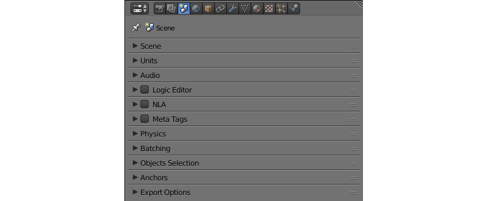
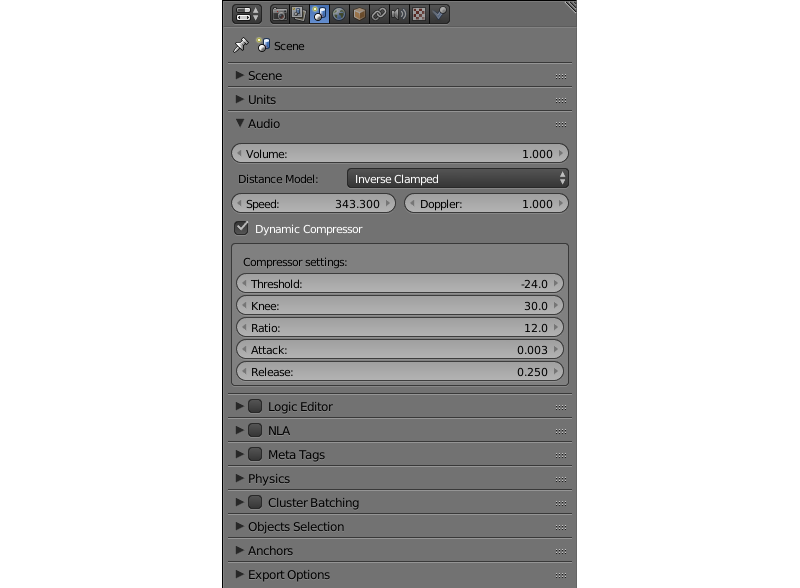
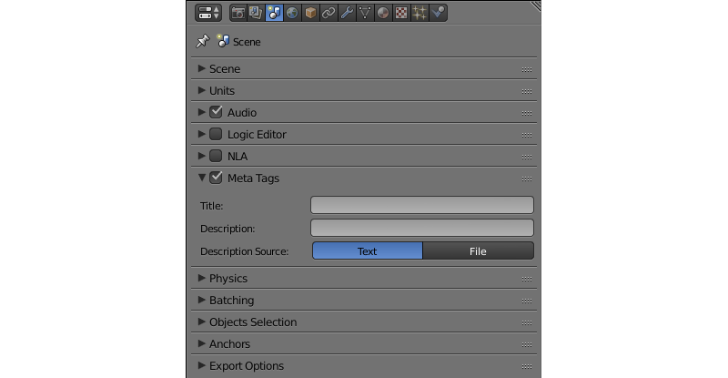

场景设置¶
目录
定义整个场景的外观和行为（不只是一个单一的物体）所有参数都能在三个面板里找到：Render 面板时，Scene 面板和 World 面板。
渲染面板¶

场景中的所有图像渲染参数都在此面板上找到。
著色¶
此面板包含各种着色选项。

- 推荐设置选项
该按钮用于实现3D场景在Blender的视口和Web浏览器的外观之间的最大一致性。按下此按钮：
启用 世界空间着色，
切换材质模式到 GLSL,
切换视口着色模式到 材质 和
设置主摄像头适合 垂直 。
- 世界空间着色
此选项打开和关闭 世界空间着色 （照明数据的世界空间演绎将用于物体阴影）。默认情况下禁用。


场景面板¶
关于场景行为的设置，包括音频，物理和动画设置，都在此面板上找到。
音频¶
音频设置
- 音量
应用中的声音的主音量。此值介于0到100之间，并默认值是1.0。
- 距离模型
用于计算距离衰减的距离的模型。以下型号的引擎支持：
None- 不使用距离模型，声音具有体积不变无论距离远近。指数钳制- 一个钳位指数距离模型。线性钳制- 被夹住的直线距离模型。逆钳制- 被夹住的逆距离模型。以下型号部分支持（以同样的方式相应的 钳位 型车型）：
冪线性反此参数默认设置为
逆钳制。- 速度
此参数设置用于多普勒效应计算音速。它的值以米每秒为单位，默认设置为343.3。
- 多普勒效应
这为多普勒效应计算距离因素。它的默认值，如果1.0。
- 动态压缩
压缩音频信号的动态范围。该功能可用于使声音更加丰富。默认情况下禁用。
- 阈值
如果音频信号的幅度超过由该参数指定的值，压缩器将降低其等级。默认设置为-24分贝。
- 拐点
反响曲线切换到递减模式时低于阈值的间隔。默认设置为30。
- 比率
增益衰减量。默认设置为12。
- 起音
让压缩器减少增益10 dB的时间（以秒为单位）。默认设置为0.003。
- 释放音
让压缩器提高增益10 dB的时间（以秒为单位）。默认设置为0.25。

Meta标签¶
应用程序的meta标签。
- 名称
应用程序的标题。
- 描述
应用程序的说明。可以是一个简单的文本或文本文件的链接（如果
Description Source参数设置为File值）。- 说明源
应用程序的说明的来源。说明可以从一个文件中加载，或直接在
Description字段中写出。此参数可以有两个值，Text和File，它是默认设置为Text。

物体簇和LOD¶
物体簇和层次细节的设置。

- 簇大小
簇的大小用于批量（尺寸：米）的处理。如果该参数被设置为零，引擎将场景中所有物体合并。默认设置为零。
- LOD簇大小乘数
该参数用于细分簇（基于每个物体指定的LOD距离）到较小的部分使得不同情况的层次细节切换不被引起注意。小簇的大小是由物体的LOD距离乘以这个参数的值定义。较高的值导致更大的簇，提高性能但使得过渡比较明显，而较低的值让变换不被引起注意但是以性能降低为代价。可以用来作为优化的手段。默认设置为0.5。
- LOD平滑过渡
定义物体将使用切换其 LOD 层次时使用平滑过渡。有以下选项︰
OFF - 滑过渡被禁用 （最快）。
NON-OPAQUE - 使用平滑过渡在
Add,Alpha Clip,Alpha Blend,Alpha Sort和Alpha Anti-Aliasing材质.ALL - 平滑过渡将用于所有物体 （慢）。
选择 “ALL” 值可以明显降低应用程序的性能，所以小心使用。默认值是 “NON-OPAQUE”.
最大 LOD 滞后区间
用于切换LOD级别的间隔（米）的长度。这个值的一半从距离阈值添加/减去，产生两个不同的阈值切换到较低的和更高的LOD级。这应该减少LOD “popping” 的效果。默认设置为4。
世界环境面板¶

环境设定，如天空，雾气和这样的设置在该面板上找到。
世界环境¶
天空的设置。

- 渲染天空
如果启用此参数，引擎会在场景渲染天空。
- 墙纸天空
如果该参数被启用，天空梯度将总是从屏幕的顶部到底部，不管摄像机的位置和角度。
- 混色天空
地平线和天顶色之间的平滑过渡。
- 真实天空
天空渲染与地平线受相机角度影响。
- 水平颜色
水平线的颜色
- 天顶色
天空顶的颜色。
- 反射世界
渲染反射时渲染天空。
- 只渲染反射
在渲染的反射时 只 渲染天空。
- 世界背景
启用和禁用
世界背景（位于3D View面板下的Display选项卡）。当激活此选项，则背景颜色在视区窗口中渲染的方式跟在引擎里面渲染是一样的。
雾场¶
雾设置。

- 最小值
雾的最小强度。默认设置为零。
- 深度
在从相机这个距离的雾效果达到最大强度。默认设置为25。
- 起始
雾效果开始出现在从相机这个距离。默认设置为5。
- 高度
该参数快速指定如何雾强度随相机的高度增加而减小。默认设置为0。
- 散去
该参数指定规则，根据该边界之间的雾的变化（由
Start和Depth参数指定）的密度。可以有以下值：Quadratic，Linear，Inverse Quadratic。默认设置为Quadratic。- 使用自定义颜色
可用于设定的雾的颜色。默认情况下启用。如果禁用此参数，标准（0.5，0.5，0.5）的颜色将被使用。
- 雾颜色
颜色雾。，如果
使用自定义颜色参数启用 ，就可以改变。浅灰色（0.5，0.5，0.5）默认情况下使用。


{kind=link}
{kind=link}
{kind=link}
{kind=link}
{kind=link}
{kind=link}
{kind=link}
{kind=link}
{kind=link}
{kind=link}
{kind=link}
{kind=link}
{kind=link}
{kind=link}
{kind=link}
{kind=link}
{kind=link}
{kind=link}
{kind=link}